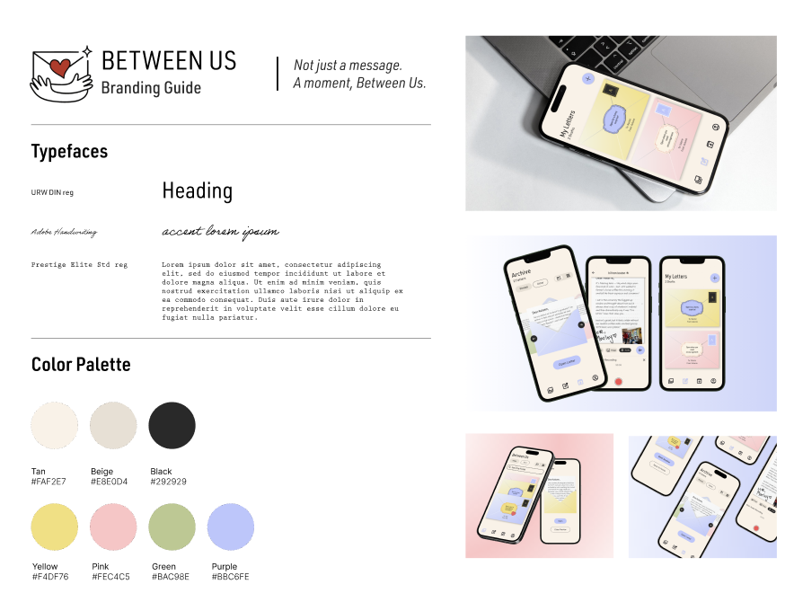
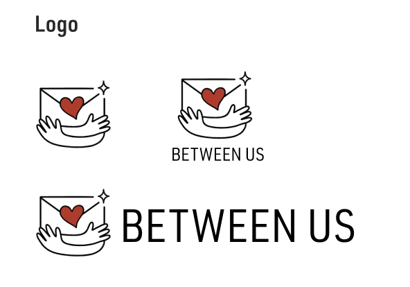
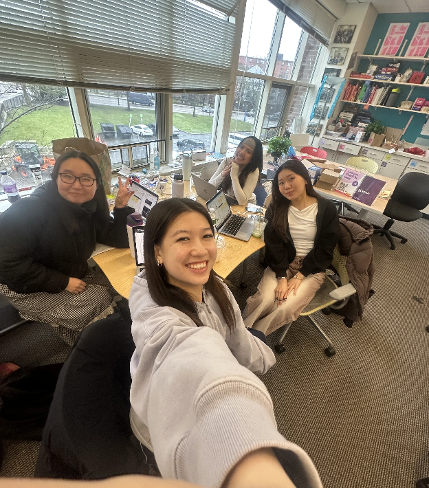

Take your time.
Say something real.
Between Us is a mobile-first platform that translates the care and weight of a handwritten letter into something you can send from your phone. We built the entire thing in under 24 hours at the CreateSC Designathon, working through the night to get every interaction feeling right.
Users can build rich, layered messages using photos, voice memos, sketches, and mood customization, then set them to arrive at a specific moment in the future. No notifications. No read receipts. Just the letter, when it's ready.
We text constantly and yet somehow feel further apart.
The designathon brief asked us to take a physical, tangible experience and bring it into a digital format without losing what makes it special. We kept coming back to the experience of handwriting letters. Not emails. Not DMs.
Modern messaging is built for speed. You send a text in three seconds and the conversation moves on before either person has really said anything. The emotional weight that used to live in written communication has been compressed out of existence.
Our team felt this personally. We were all studying far from home, and the friendships that mattered most were the ones hardest to maintain across different schedules and time zones.
What would it feel like if sending a message to someone required you to slow down, sit with your thoughts, and actually mean what you wrote?
The feeling of opening something made just for you.
Between Us is designed to resist the urge to rush. Every step of the experience, from writing to sending to receiving, is built with friction that feels good. The kind of pause that makes you think twice about what you actually want to say.
Four ways to make it yours.
Designed to feel like the real thing.
Soft, personal, analog at heart.
The visual identity pulls from the tactile world of paper and ink. Warm neutrals, subtle textures, and type choices that feel like they were chosen by hand rather than generated from a template.
Nothing in the brand should feel clinical or tech-forward. Between Us is supposed to feel like something your grandmother might recognize and your best friend would love.



Make it.
Matter.
We came in with a list of twenty ideas and left with four. That constraint was the best thing that happened to the project. Every feature we kept had to earn its place, and the ones we cut would have diluted what made the core idea worth building in the first place.
We had no idea if it would work. That's the honest answer. We had a concept, a tight deadline, and a team running on coffee and conviction. What surprised me most wasn't that we shipped it, but how good it felt to ship something I was actually proud of. Between Us didn't happen because the conditions were perfect. It happened because we decided it would.
